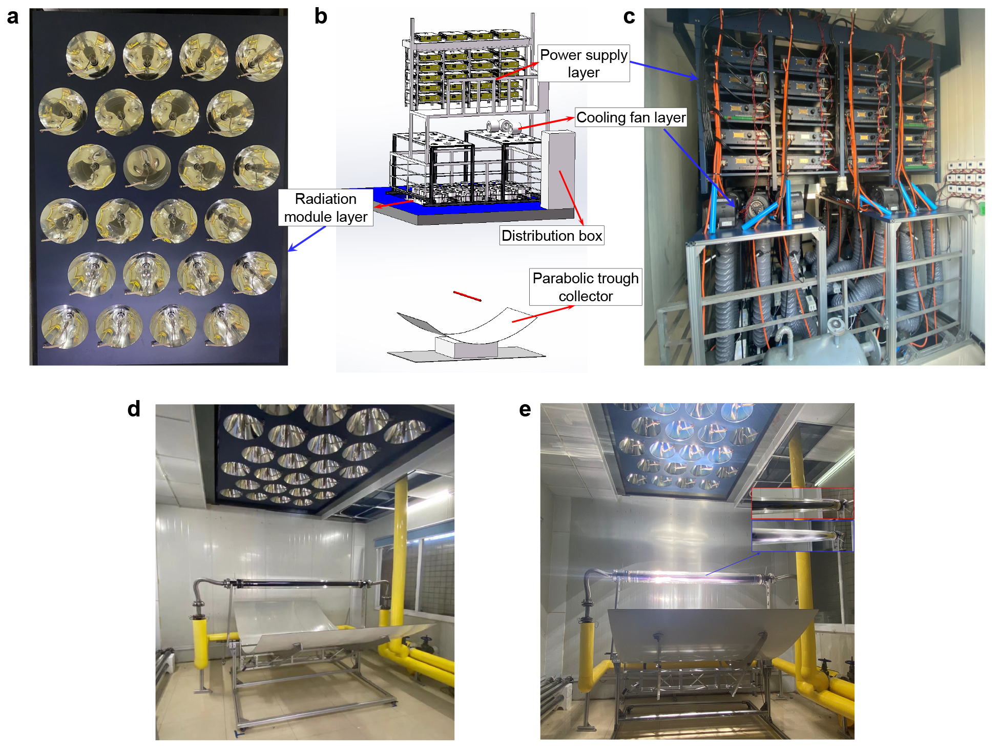
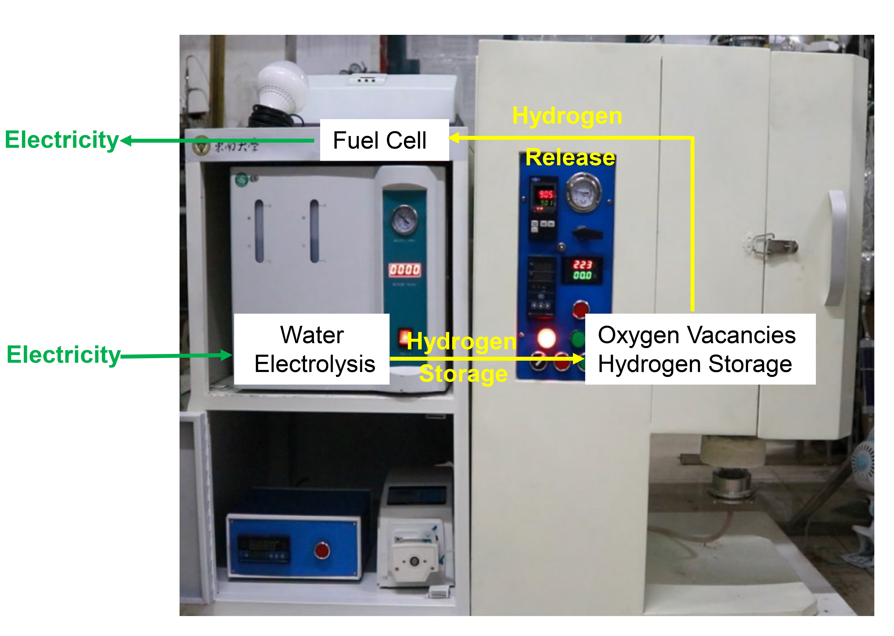

Devices
This part is used to demonstrate some devices that Yuan built.
► Large-scale Collimating solar simulator

A device used for providing collimated light. (a) Photograph of the solar simulator. (b) Design diagram of the solar simulator. (c) Power supply layer and cooling fan layer. (d) Solar simulator and parabolic trough collector. (e) Some radiation modules are running, and the inset compares the receiver when the simulator is on (blue frame) or off (red frame).
|
► Pilot-scale system for cascade utilization of full-spectrum solar energy

The pilot-scale system cascade utilizes full-spectrum solar energy to produce both solar fuel(CO, CH4, and H2) and high-quality thermal energy(> 300oC). It includes six subsystems--collimating solar simulator, concentrator system, photothermal synergistic catalysis reactor, thermal oil circulation system, control system, and gas analysis system.
|
► Photothermal synergistic catalysis and heat-collection reactor

(a)Reactors in the pilot-scale system with a length of 1.9 m. The inner tube diameter is 40mm, and the diameter of the glass envelope is 94mm. The feed gas, like CO2, water vapor, reacts in the annular space between the inner tube and the glass envelope. The thermal energy is taken away by the thermal oil in the inner tube. (b) Different catalytic layers on reactors. Each reactor was first coated with a multi-metal heat-collection layer by magnetron sputtering. Then, they were coated with different TiO2-based catalytic layers by the dip-coating method.
|
► A kW-scale hydrogen storage device

The device includes three modules of water electrolysis, hydrogen storage, and fuel cell. Electric energy is converted into hydrogen through the electrolysis of water and stored. When electricity is needed, hydrogen is released, and the fuel cell is used to generate electricity.
|
|